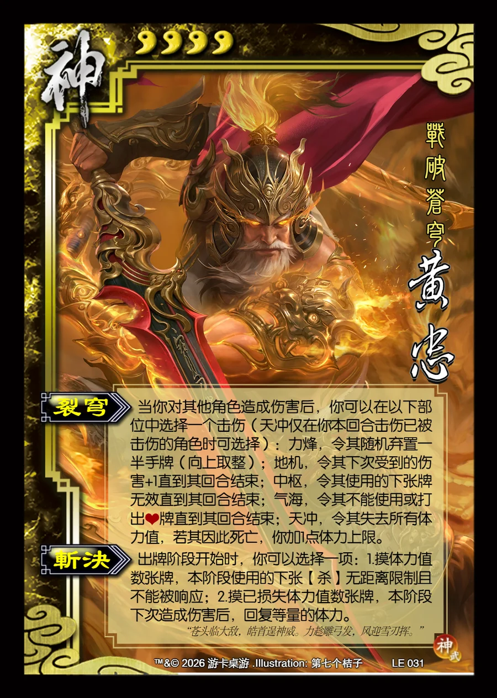

点击卡面查看大图
神
神黄忠
♥4战破苍穹
裂穹
当你对其他角色造成伤害后，你可以在以下部位中选择一个击伤（天冲仅在你本回合击伤已被击伤的角色时可选择）：力烽，令其随机弃置一半手牌（向上取整）；地机，令其下次受到的伤害+1直到其回合结束；中枢，令其使用的下张牌无效直到其回合结束；气海，令其不能使用或打出♥牌直到其回合结束；天冲，令其失去所有体力值，若其因此死亡，你加1点体力上限。
斩决
出牌阶段开始时，你可以选择一项：1.摸体力值数张牌，本阶段使用的下张【杀】无距离限制且不能被响应；2.摸已损失体力值数张牌，本阶段下次造成伤害后，回复等量的体力。
“苍头临大敌，皓首逞神威。力趁雕弓发，风迎雪刃挥。”